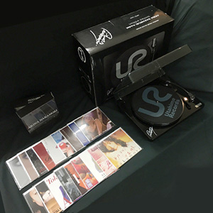

盒装：第2张
发行年份：2016年
发行日期：7月13日
Everlasting Love / NOT CRAZY TO ME
| Everlasting Love |
| NOT CRAZY TO ME |
片想い / 愛撫
| 片想い |
| 愛撫 |
夜のどこかで 〜night shift〜
| 夜のどこかで 〜night shift〜 |
| Rose Bud |
月華
| 月華 |
| BLUE LACE |
原始、女は太陽だった
| 原始、女は太陽だった |
| 綺麗 |
Tokyo Rose
| Tokyo Rose |
| 優しい関係 |
MOONLIGHT SHADOW-月に吠えろ
| MOONLIGHT SHADOW-月に吠えろ |
| MOONLIGHT SHADOW-月に吠えろ 原创卡拉OK |
APPETITE
| APPETITE |
| SWEET SUSPICION |
The Heat〜musica fiesta〜
| The Heat〜musica fiesta〜 |
| Siesta 〜恋のままで〜 |
Days
| Days |
| 華 -HANA- |
落花流水
| 落花流水 |
| DESIRE -情熱- (2005年版) |
花よ踊れ
| 花よ踊れ |
| GAME |
DIVA 单曲版
| DIVA 单曲版 |
| Heartache (原版) |
Rojo -Tierra-
| Rojo -Tierra- |
| La Vida |
unfixable
| unfixable |
| 雨月 |
FIXER -WHILE WOMEN ARE SLEEPING- 单曲版
| ひらり -SAKURA |
| FIXER -WHILE WOMEN ARE SLEEPING- 单曲版 |
赤い花
| 赤い花 |
| 赤い花 (卡拉OK） |
初めて出逢った日のように
| 初めて出逢った日のように |
| 初めて出逢った日のように (卡拉OK) |
首发规格：18黑胶7寸唱片+1播放器: D2JJ-1，全球限量1000套
唱片公司：UNIVERSAL J